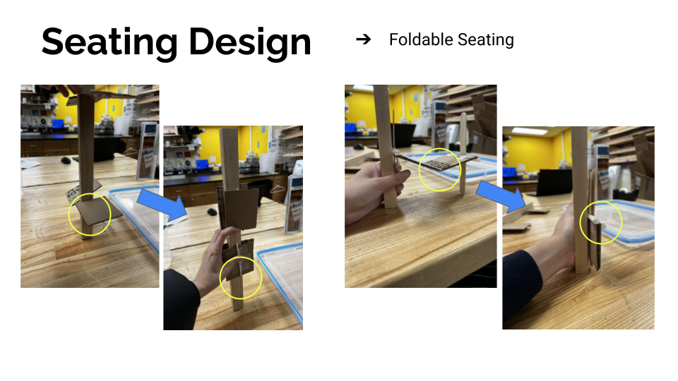
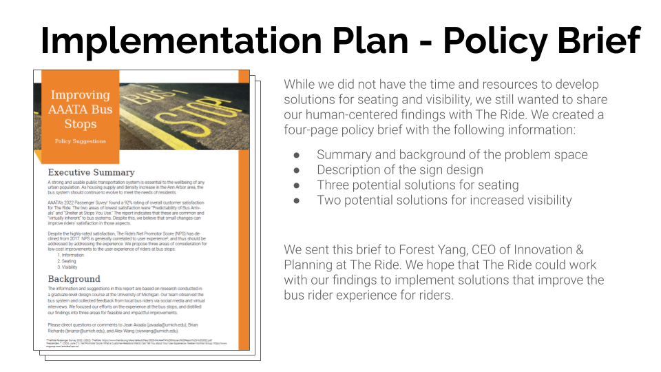

Final Selection & Prototypes
After evaluating over 100 generated ideas based on feasibility, impact, and user alignment, we selected three core directions to prototype and refine:
1. Enhanced Seating Design
To explore the seating solution space, we created simple models of foldable seating solutions. We found that further development of these ideas would require substantial engineering development work of the structure and mechanisms for seating.
Prototype of fordable bus stop bench
Considering our time and resources available for the remainder of the semester, we decided to forgo physical development of seating and visibility solutions. We planned to create a final design for the informational sign and a policy brief outlining potential solutions for the three focus areas.
2. Modular Information Panel
This panel design integrates real-time bus tracking, neighborhood map, and an interactive feedback button. We focused on accessibility by testing contrast levels and touch heights. Paper and digital wireframes were used in testing sessions with students and local riders.
As mentioned, we found that riders desired these components in a bus sign: Arrival intervals (instead of full schedule); QR code for live tracking; Detailed area map. To validate that we were creating an effective sign design, we benchmarked sign design standards from other areas, including King County Metro (Seattle, WA) and Transport for London. We found additional design considerations for signs: Consistent branding; Modular design; Standard colors and fonts.
3. Policy Brief for Stakeholders
We compiled our research insights and design rationale into a policy proposal shared with TheRide leadership. It outlines actionable design improvements and long-term strategic recommendations. A physical copy and PDF were presented to our class and transit representatives.
